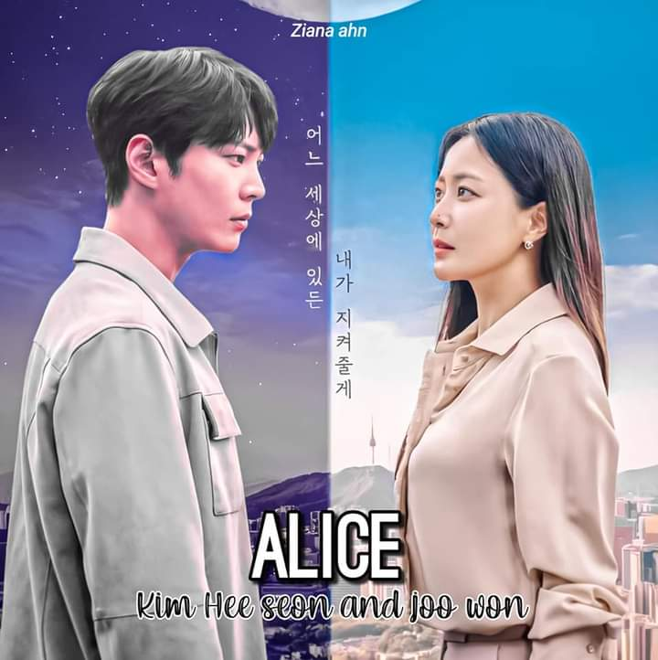

List of Ongoing Dramas
Start Up
Drama: Start-Up
Revised romanization: Start-Up
Hangul: 스타트업
Director: Oh Choong-Hwan
Writer: Park Hye-Ryun
Network: tvN
Episodes: 16
Release Date: October 17, 2020
Runtime: Sat. & Sun. 21:00
Language: Korean
Country: South Korea
Plot Synopsis by AsianWiki Staff © Needing to make $90k to open her own business, Seo Dal-Mi drops out of a university and takes up part-time work. She dreams of becoming someone like Steve Jobs.Nam Do-San is the founder of Samsan Tech. He is excellent with mathematics. He started Samsan Tech two years ago, but the company is not doing well. Somehow, Nam Do-San becomes Seo Dal-Mi’s first love. They cheer each others start and growth
Tale of the Nine Tailed

Drama: Tale of the Nine Tailed (English title) / Tale of The Nine-Tailed Fox (literal title)
Revised romanization: Gumihodyeon
Hangul: 구미호뎐
Director: Kang Shin-Hyo
Writer: Han Woo-Ri
Network: tvN
Episodes: 16
Release Date: October 7 - November 26, 2020
Runtime: Wed. & Thu. 22:50
Language: Korean
Country: South Korea
Plot Synopsis by AsianWiki Staff © Lee Yeon (Lee Dong-Wook) was once the mountain spirit of Baekdudaegan. He sacrificed his life as a mountain god to resurrect the life of the woman he loved A Eum. Lee Yeon now lives his life as a nine tailed fox in human form. He has lived this way for hundreds of years.
Meanwhile, Nam Ji-A (Jo Bo-Ah) works for TVC station as a PD of documentaries. She seeks out stories on the supernatural. Back in 1999, her parents were involved in a car accident in Yeou Gogae. She remembers a man that saved her in that accident. Now, Nam Ji-A reviews CCTV footage from a wedding hall where the bride disappeared. She sees the man that saved her as child walking out the wedding wall with a red umbrella. His name is Lee Yeon.
Record of Youth

Drama: Record of Youth (English title) / The Moment (early English title) / Youth Record (literal title)
Revised romanization: Chungchungirok
Hangul: 청춘기록
Director: Ahn Gil-Ho
Writer: Ha Myung-Hee
Network: tvN
Episodes: 16
Release Date: September 7 - October 27, 2020
Runtime: Monday & Tuesday 21:00
Language: Korean
Country: South Korea
Plot Synopsis by AsianWiki Staff © Youth Record follows the lives of young people in the world of modeling. Sa Hye-Jun (Park Bo-Gum) is smart and handsome. He is a nice guy and a popular model, but what he really wants is to become an actor. He has auditioned for many acting roles, but hasn't found success yet. Unfortunately, Sa Hye-Jun doesn't have much presence as an actor. Meanwhile, An Jeong-Ha (Park So-Dam) works as a make-up artist.
Do you like Brahms

Drama: Do You Like Brahms? (literal title)
Revised romanization: Beuramseureul Joahaseyo
Hangul: 브람스를 좋아하세요
Director: Jo Young-Min
Writer: Ryu Bo-Ri
Network: SBS
Episodes: 16
Release Date: August 31 - October 20, 2020
Runtime: Monday & Tuesday 22:00-23:10
Language: Korean
Country: South Korea
Plot Synopsis by AsianWiki Staff © "Do You Like Brahms?" follows students, majoring in music, at a prestigious university and those around them. Park Joon-Young is an elite pianist. Chae Song-A is a 4th year university student and studies to become a violinist.
More Than Friends

Drama: More Than Friends (English title) / Number of Cases (literal title)
Revised romanization: Kyungwooui Soo
Hangul: 경우의 수
Director: Choi Sung-Bum
Writer: Jo Seung-Hee
Network: JTBC
Episodes: 16
Release Date: September 25 - November 21, 2020
Runtime: Friday & Saturday 22:50
Language: Korean
Country: South Korea
Plot Synopsis by AsianWiki Staff © Due to a misunderstanding, Lee Soo and Kyung Woo-Yeon have held a crush on each other for over 10 years. Lee Soo works as a photographer and he is attractive. Kyung Woo-Yeon works as a calligrapher. She has had a crush on Lee Soo for the past 10 years, since she was 18 years old.
Alice
 Drama: Alice
Revised romanization: Aelriseu
Hangul: 앨리스
Director: Baek Soo-Chan
Writer: Kim Kyu-Won
Network: SBS
Episodes: 16
Release Date: August 28 - October 24, 2020
Runtime: Friday & Saturday 22:00-23:10
Language: Korean
Country: South Korea
Plot Synopsis by AsianWiki Staff © Due to a death, a man and a woman become separated forever, but they meet again like magic. Park Jin-Gyeom (Joo Won) is a detective, who doesn't show emotions. While investigating a mysterious case, he realizes the existence of time travelers. The time travelers come to the present day from the future through a space called Alice. Park Jin-Gyeom struggles to prevent negative things happening through Alice. During this time, he meets Yoon Tae-Yi (Kim Hee-Seon) again. She died in the past. Park Jin-Gyeom insists that their meeting is a fateful reunion. Yoon Tae-Yi is a genius physicist and she holds a key to time travel. While they unravel the secret of time travel together, she realizes a secret behind her.
Do Do Sol Sol La La Sol

Drama: Do Do Sol Sol La La Sol
Revised romanization: Dodosolsollalasol
Hangul: 도도솔솔라라솔
Director: Kim Min-Kyeong
Writer: Oh Ji-Young
Network: KBS2
Episodes: 16
Release Date: October 7 - November 26, 2020
Runtime: Weds. & Thurs. 21:30
Genre: Romantic-Comedy
Language: Korean
Country: South Korea
Plot Synopsis by AsianWiki Staff © Goo Ra-Ra (Go Ara) is a pianist. She has bright personality. Something happened that caused her to become bankrupt. She doesn't have anything now and she is frustrated with her situation. Sunwoo Joon (Lee Jae-Wook) doesn't care what other people think about him, but he has a warm heart. He is free spirited and doesn't have a specific dream or goal for his life. He makes ends meet by working part-time jobs. Goo Ra-Ra and Sunwoo Joon meet at the small private piano academy LaLa Land in a country village.
Private Lives

Drama: Private Lives (English title) / Private Life (literal title)
Revised romanization: Sasaenghwal
Hangul: 사생활
Director: Nam Gun
Writer: Yoo Sung-Yeol
Network: JTBC
Episodes: 16
Release Date: October 7 - November 26, 2020
Runtime: Wed. & Thu. 21:30
Language: Korean
Country: South Korea
Plot Synopsis by AsianWiki Staff © Swindlers come across a secret of the nation and try to reveal the secret. They must go up against a large company by using all of their skills. Lee Jeong-Hwan (Ko Gyung-Pyo) is a team leader for the major corporation. He looks like an ordinary company employee, but he is a mysterious figure. Cha Joo-Eun (Seohyun) is a swindler, who has the looks of a sweet & innocent woman. She supports herself with her crimes. Jeong Bok-Gi (Kim Hyo-Jin) is a professional swindler. She often targets other swindlers. She is elegant and also charismatic. Kim Jae-Wook (Kim Young-Min) is Jeong Bok-Gi’s partner in crime.
Zombie Detective

Drama: Zombie Detective (literal title)
Revised romanization: Zombietamjung
Hangul: 좀비탐정
Director: Shim Jae-Hyun
Writer: Baek Eun-Jin
Network: KBS2
Episodes: 12
Release Date: September 21 - October 27, 2020
Runtime: Mon & Tue 21:30
Language: Korean
Country: South Korea
Plot Synopsis by AsianWiki Staff © Kim Moo-Young (Choi Jin-Hyuk) has been a zombie for the past 2 years. To survive, he has mimicked the mannerisms of humans in a village. He then leaves for the city. There, Kim Moo-Young opens an office to work as a private detective. He does not remember anything before he became a zombie. He struggles to live with humans and to regain his past memory. Meanwhile, Kong Sun-Ji (Park Joo-Hyun) used to be a writer of a current affairs complaint program. A witness in a case, she was working on, was attacked by an unknown man. Due to that, she quit her job. She becomes involved with Kim Moo-Young and takes a part-time position at his private detective office.